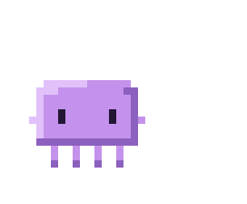
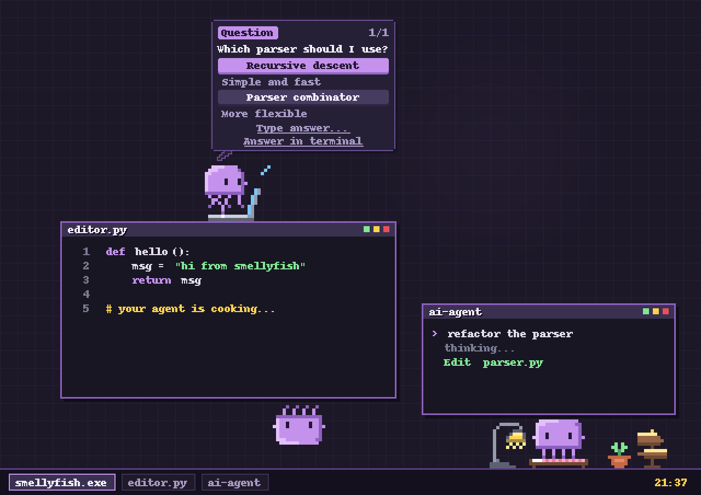
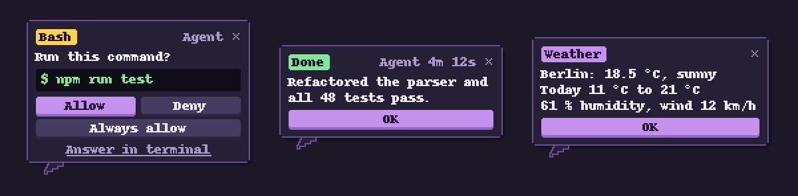
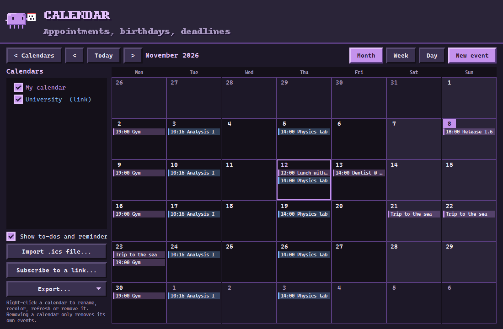
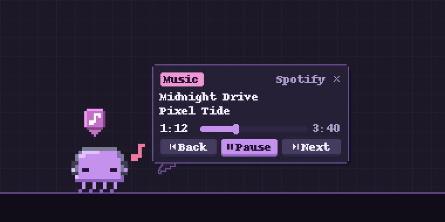
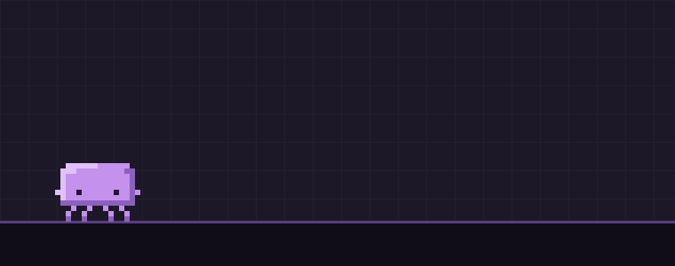
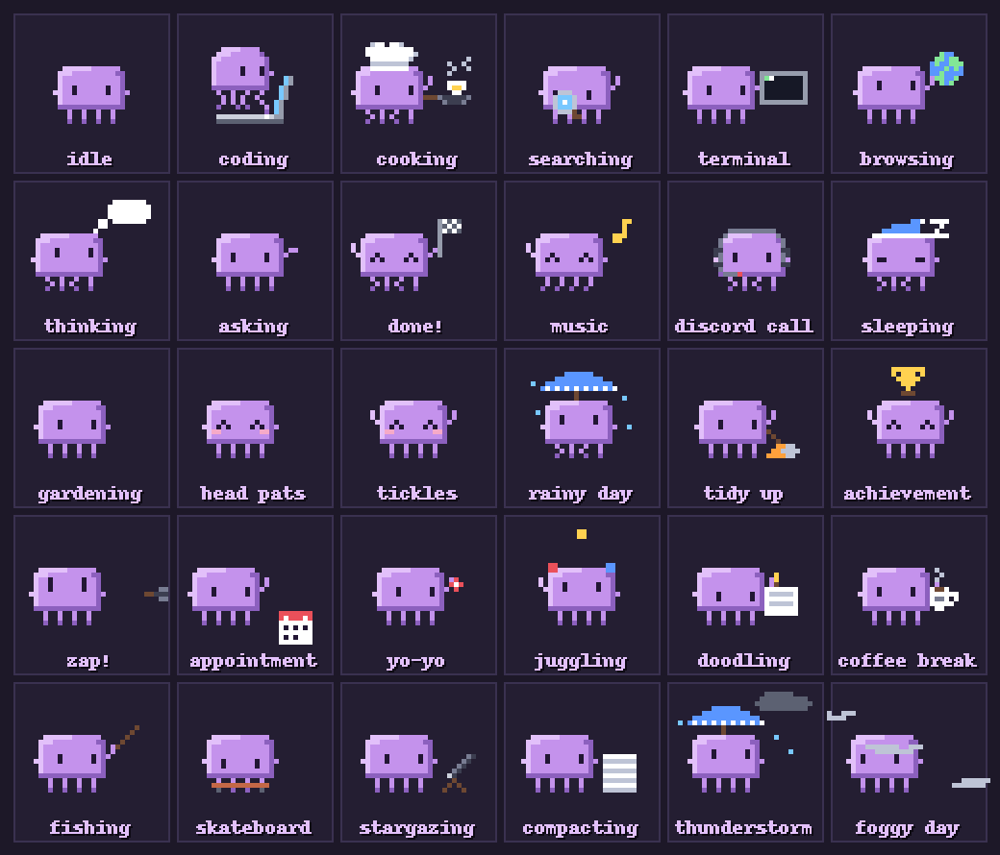
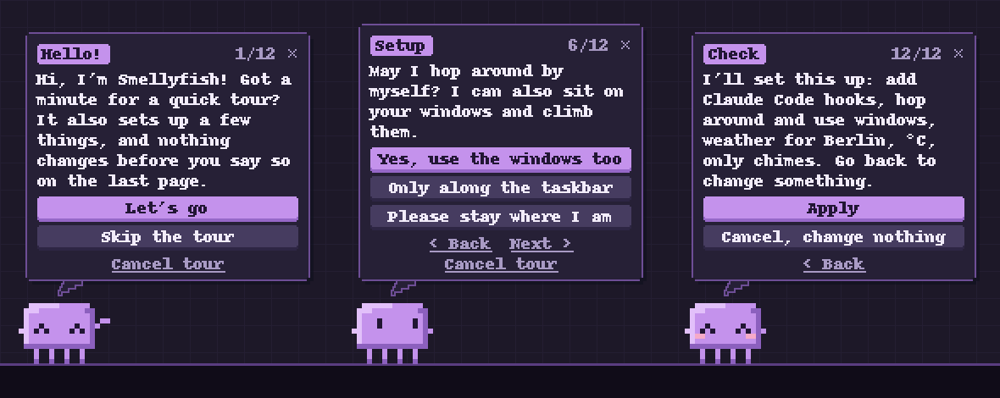
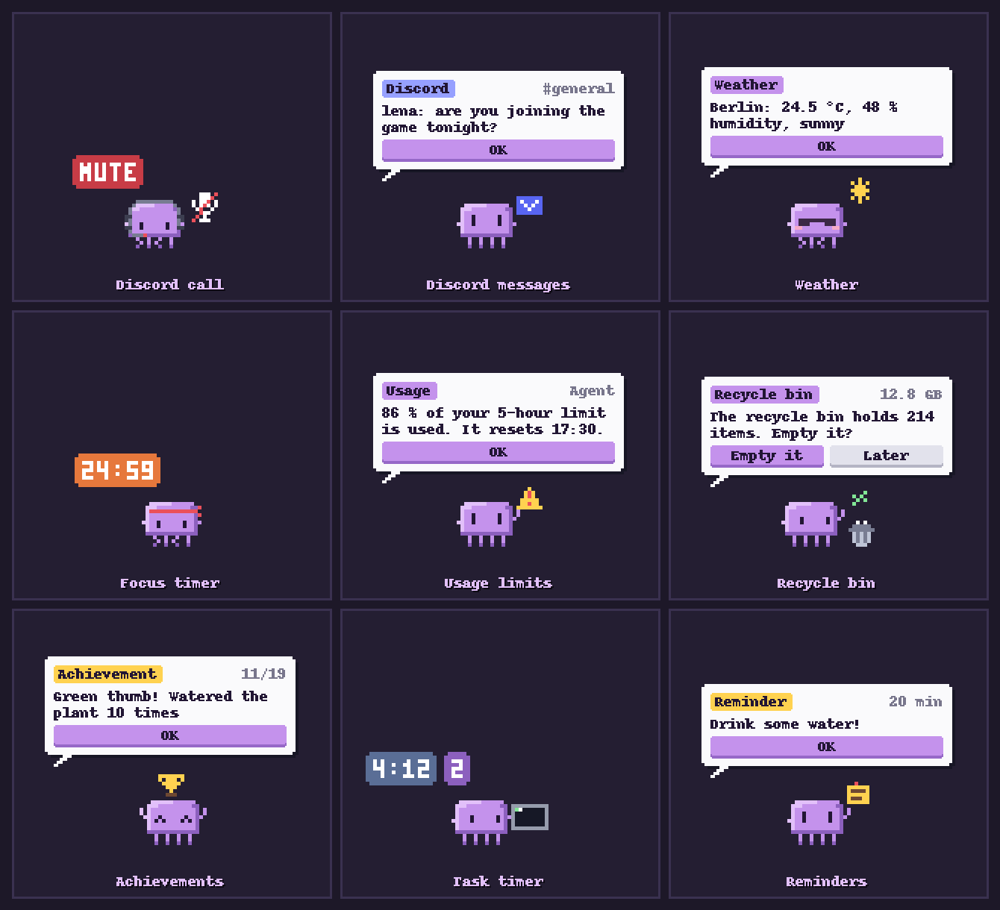
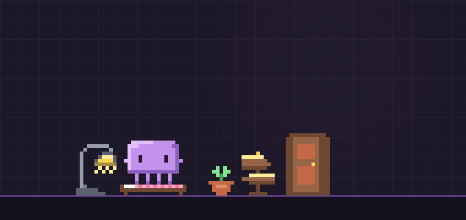

Desktop pet // Windows 10 · 11 // macOS 13+
SMELLYFISH.exe
A pixel jellyfish that sits on your windows and shows what Claude Code, Codex and your computer are doing. Questions from Claude Code appear in speech bubbles you answer with a click. It keeps your calendar, knows what music is playing, and when nothing is going on it naps in its own bed.


// sits on your editor, asks a question, goes home to bed afterwards.
Next to your agent
With the integration switched on, the jellyfish shows what Claude Code, Codex or another coding agent is doing and for how long, and tells you when a task is done or needs you. Questions and permission prompts are answered in the bubble; the little x sends them back to the terminal.

Calendar
Month, week and day views with your own events. Import an .ics file or paste a calendar link
from Google, Outlook, iCloud or your university timetable; links refresh every hour. The jellyfish
reminds you before an appointment and pulls out a calendar page when it starts. Removing an imported
calendar removes only its own events.

// to-dos and reminders show up too. Export as .ics, the to-do list also as Markdown or CSV.
Music and movement
Whatever plays in Spotify, a browser or another player (on a Mac: Spotify and Music): the jellyfish puts on headphones, a note appears in its badge, and a click on the note gives you play, pause and skip. It does not dance all the time; it bops along for a while and then goes on with its day.

It hops like a jellyfish: it contracts, pushes off, the tentacles trail behind and settle again after the landing.

What it gets up to
- window hoppingsits on window edges, jumps between them, climbs their sides and hangs from a tentacle under one now and then
- grab & throwdangles from your cursor, swings, flies and lands with a squish
- a homelamp for do-not-disturb, a bed, a plant that tells you the weather (optional)
- reactionsbusy CPU, Discord calls, a full recycle bin or Trash, fullscreen games, a cartoon zap from the charger
- moodslivelier in the late morning, sleepy at night, startled when you switch windows very fast
- head patspet its head or tickle its tentacles with your cursor
- mini modepeeks in from the screen edge; drag it up or down, pull it out to bring it back
- toys & trophiesa ball to fetch, fish snacks, a focus timer and achievements
- local chattalk to your own Ollama or llama.cpp model; nothing leaves your computer
- right-clickoptional entry for files and folders: details with SHA-256, or start a CLI agent right there
- many agentsClaude Code, Codex, Gemini CLI, Cursor, Copilot, Antigravity and DeepSeek-TUI, each with its own tag in the badge
- lan lobbyfriends on your network step out of a door in their own colors and hand over letters; encrypted

First start
The jellyfish explains the basics in its bubbles and asks a few questions: Claude Code hooks, which screen, whether it may roam, a home, weather, sounds and autostart. You can go back and change an answer, and nothing is applied until you confirm on the last page.

More helpers
Discord mute and deafen status, messages while Discord is minimized, the weather at its plant, a focus timer, usage warnings, achievements and reminders. Timers and counters appear when something changes or when you point at the jellyfish.


// visits are optional; nothing listens until you open a lobby.
Get it
- Windows: download Smellyfish.exe and run it. It is a single portable file, there is nothing to install.
- macOS 13 or newer: open Smellyfish.dmg and drag Smellyfish into Applications. The first start is blocked once because the app is not notarized: click Open Anyway under System Settings > Privacy & Security.
- Follow the short tour. Later, right-click the jellyfish for the menu and the settings.
Talks to your coding agents only on your own computer (127.0.0.1). Hooks are added only after you agree. Calendar links are only downloaded, song info comes from your own computer, and updates come from this repository's releases, checked against a SHA-256 digest before they are installed.